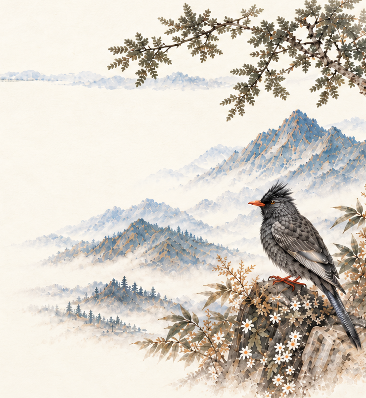
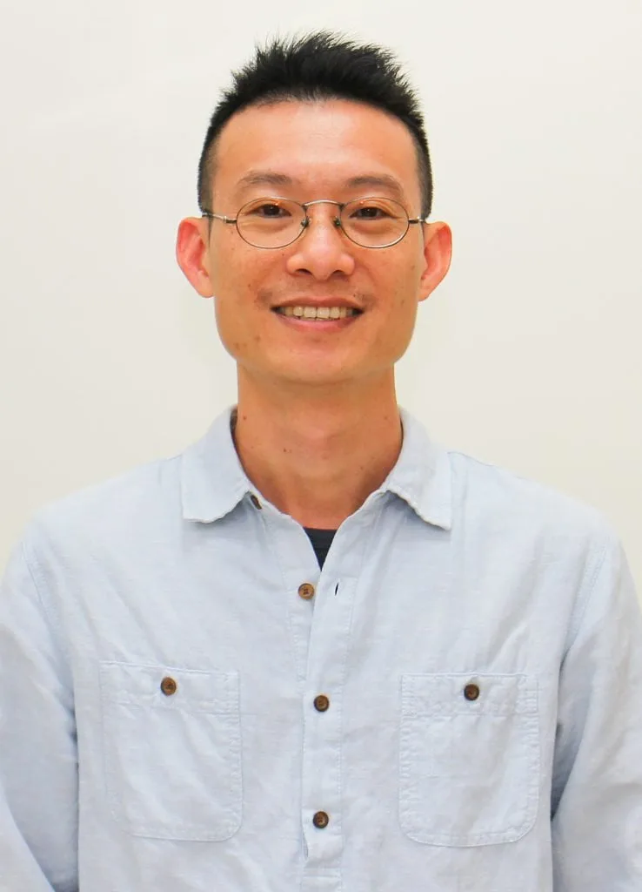
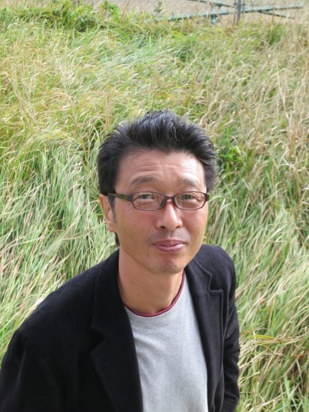
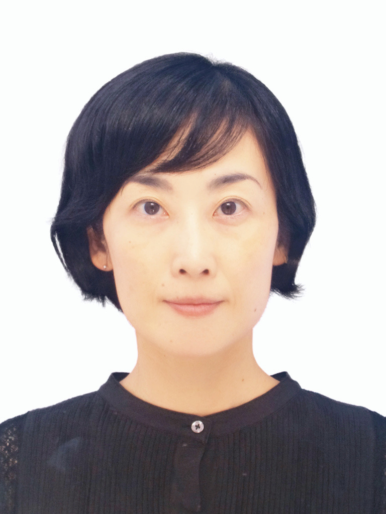
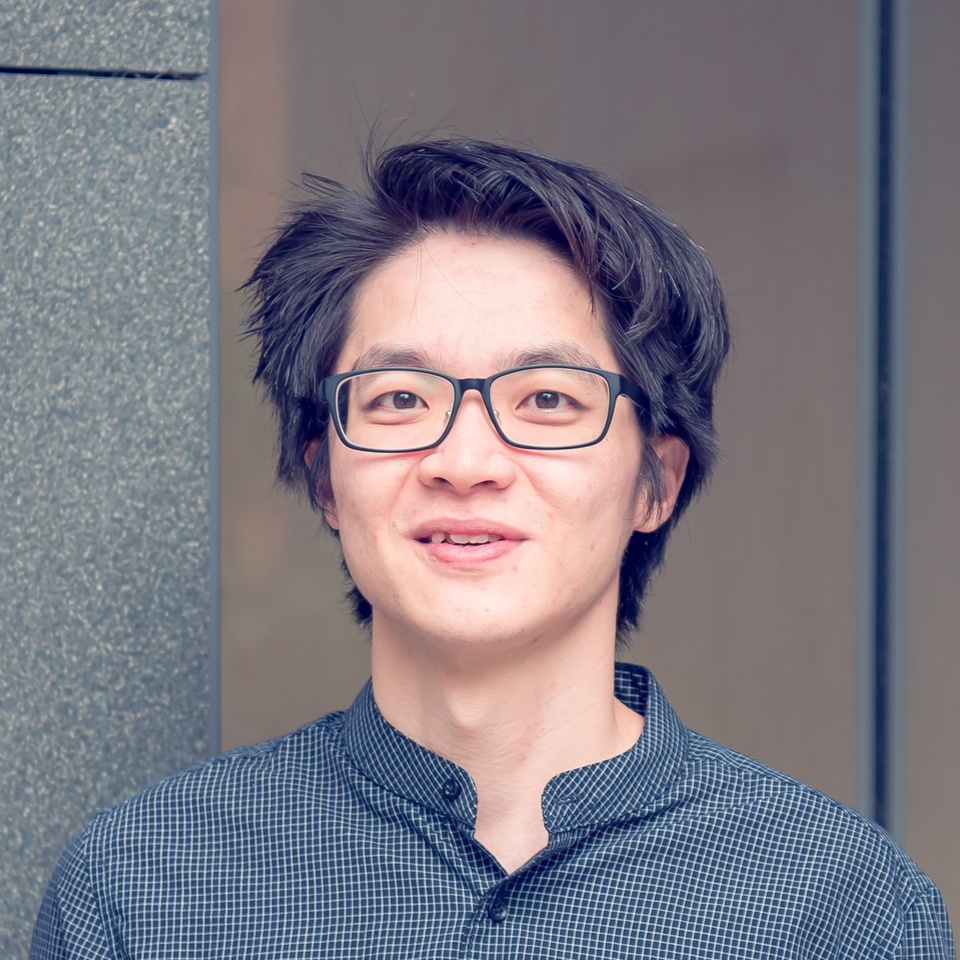
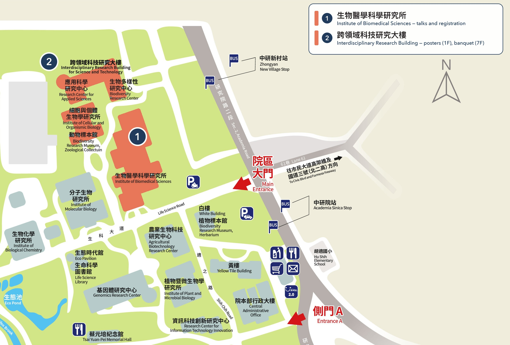
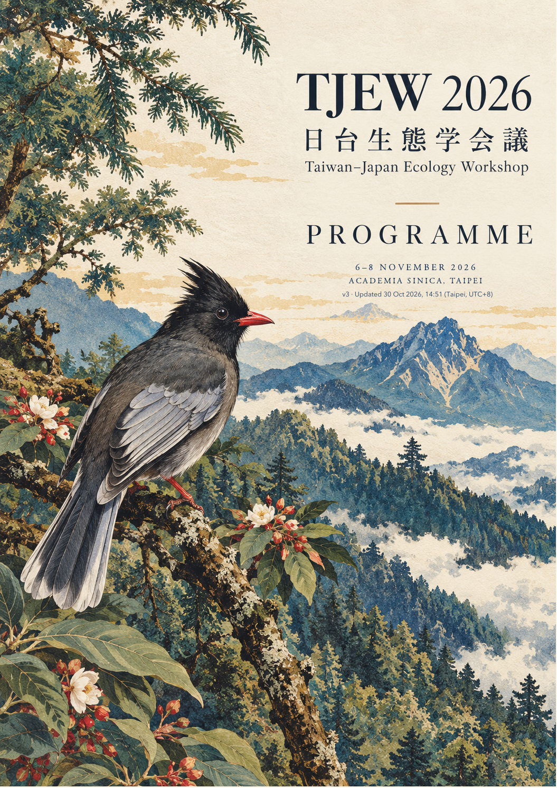

Friday · Day 1
6 November
- Registration
- Opening
- PL1 · Chih-hao Hsieh
- Parallel sessions · C1 / C2
- Coffee break
- Parallel sessions · S1 / C3
- Poster session 1 · P01–P28
Taiwan · Japan · Ecology
The 8th Taiwan–Japan
Ecology Workshop
Programme v3
Updated (Taipei, UTC+8)

At a glance
From ecosystem dynamics to the evolution of biodiversity. Find your sessions and make room for conversation.
Friday · Day 1
Saturday · Day 2
Sunday · Day 3
Plan your workshop
Select a session to see its speakers and talks. Select a linked presentation title to read its abstract. Plenary lectures: 40 + 10 min. Contributed talks: 12 + 3 min.
Friday
2026年11月6日（金）
Registration · 11:00–17:00
IBMS 1F lobby
B1C Auditorium

PL1 · Plenary lecture 1
Empirical dynamic modeling towards mechanic understanding, forecasting and early warning for ecosystem dynamics
National Taiwan University
Parallel sessions · 14:05–14:50
3 talks · Expand programme
Moderator Takefumi Nakazawa 仲澤剛史 (National Cheng Kung University)
National Taiwan University
Climatic warming drives directional changes in fish population dynamics across the Atlantic Ocean
National Cheng Kung University
Mie University
3 talks · Expand programme
Moderator Shan-Dar Tao 陶善達 (National Museum of Natural Science, Taiwan)
National Museum of Natural Science, Taiwan
Department of Bioenvironmental Systems Engineering, National Taiwan University
The University Museum, The University of Tokyo
Parallel sessions · 15:20–17:20
7 talks · Expand programme
Organizers Hsuan-Wien Chen (National Chiayi University) · Takuya Sato (Kyoto University)
Times are approximate and may vary slightly.
Opening remarks · Takuya Sato
National Changhua University of Education
A zombie parasitism: How a parasitic barnacle takes over its hosts?
Department of Entomology, National Taiwan University
Center for Ecological Research, Kyoto University
Hiroshima University
Center for Ecological Research, Kyoto University
A unique mechanism of male-killing induced by symbiotic viruses
Kyoto University
Entomopathogen-related fungal symbionts on female hindleg of dinidorid stinkbugs
National Chiayi University
A slightly more complicated model for pattern of parasitism in nature
Questions and discussion
8 talks · Expand programme
Moderator Huiyu Wang 王慧瑜 (Academia Sinica)
National Taiwan University
Academia Sinica
National Cheng Kung University
Institute of Oceanography, National Taiwan University
Department of Bioenvironmental Systems Engineering, National Taiwan University
Light regime and the growth–grazing balance of pico- and nanoplankton over the Taiwan Bank
Atmosphere and Ocean Research Institute, The University of Tokyo
Modeling Lipid-Driven Population Dynamics of Copepod Neocalanus plumchrus in the Subarctic Pacific
Hawaii Institute of Marine Biology
Influence of Habitat Morphology on Coral Recruit Distribution
Sesoko Marine Research Station, Tropical Biosphere Research Center, University of the Ryukyus
Saturday
2026年11月7日（土）
Registration · 08:30–18:00
IBMS 1F lobby

PL2 · Plenary lecture 2
A Process-Based Field Approach Linking Classical Theory of Sociobiology and Classical Theories of Population and Community Ecology
University of the Ryukyus

PL3 · Plenary lecture 3
From plant strategies to ecosystem functioning: insights from litter decomposition
Kyoto University
Parallel sessions · 11:00–13:00
5 talks · Expand programme
Organizers Kazuki Tsuji 辻 瑞樹 (University of the Ryukyus) · Shigeto Dobata (The University of Tokyo) · Shu-Ping Tseng (National Taiwan University)
Times are approximate and may vary slightly.
Each talk is allotted 20 minutes, including discussion. The 20-minute session buffer allows brief extensions of 2–3 minutes and an optional 5–10-minute coffee break after the third talk.
Kyoto University
National Chung Hsing University
Elevational shifts in intraspecific body size and mandibular morphology of termites
Faculty of Agriculture, Kagawa University
The hunting behavior spectrum of the tiny trap-jaw ant Strumigenys: wandering to ambush
Optional coffee break (5–10 min)
Department of Entomology, National Taiwan University
National Changhua University of Education
Discussion / buffer time
8 talks · Expand programme
Moderator Chang-Yu Chang 張昌祐 (Academia Sinica)
National Taiwan University
Spatial Facilitation as Biotic Response to Chronic Wind Stress in Cloud Forest Communities
National Taiwan University
Fog Frequency Promotes Functional Trait Diversity in Montane Cloud Forests of Northern Taiwan
Department of Biological Sciences, Tokyo Metropolitan University
Dispersal Modulates the Effects of Kin Recognition on Biodiversity
Academia Sinica
Decomposing Symbiotic Trait Variation: Dependence on Host Evolution
National Cheng Kung University
Harnessing the "Earth’s Breath": Translating Plant-Microbiome Negotiations in Pine Evolution
Okayama University
Institute of Ecology and Evolutionary Biology, National Taiwan University
Institute of Ecology and Evolutionary Biology, National Taiwan University
Road mortality of snake across heterogeneous landscapes in subtropical Asia
IBMS 1F dining area
Parallel sessions · 14:00–16:00
6 talks · Expand programme
Organizers Yun Hsiao (National Chung Hsing University) · Takefumi Nakazawa (National Cheng Kung University) · Haruka Yamazaki (University of Tsukuba)
Times are approximate and may vary slightly.
Introduction · Takefumi Nakazawa
Chair · Yun Hsiao
National Cheng Kung University
Emergent nestedness in life-history-coupled herbivory and pollination networks
University of Tsukuba
Nectar source navigation strategies in tiny flower-visiting fruit flies
Graduate School of Bioagricultural Sciences, Nagoya University
Accumulation and Release of the Chemicals Responsible for the Characteristic Response of Cats in Feline-Attracting Plants
Chair · Haruka Yamazaki
National Taiwan University
How does news of herbivore attack travel through a field of plants?
National Chung Hsing University
Eavesdroppers in the Dark: Basic Research and Future Perspectives on Frog-biting Midges in Taiwan
Field Museum of Natural History
Contrasting biogeographic histories of montane plant lineages in Taiwan and the Japanese Archipelago
6 talks · Expand programme
Organizers Tosuke Sakagami (Academia Sinica) · Natsumi Maruoka (Tohoku University)
Times are approximate and may vary slightly.
Session chairs for talks 1–6: Tosuke Sakagami and Natsumi Maruoka. Tosuke Sakagami will chair all six talks if Natsumi Maruoka is unable to attend.
Biodiversity Research Center, Academia Sinica
Atmosphere and Ocean Research Institute, The University of Tokyo
Genomic insights into the mechanisms and evolution of extracellular photosymbiosis in giant clams
Institute of Molecular Biology, Academia Sinica
Center for Ecological Research, Kyoto University
Utsunomiya University
Morphological adaptation of the filter screen in Daphnia under low-nutrient conditions
Tohoku University
Interdisciplinary Research Building, 7F
Sunday
2026年11月8日（日）
Registration · 08:30–12:25
IBMS 1F lobby
Parallel sessions · 09:00–11:00
6 talks · Expand programme
Organizers & session chairs Po-Ju Ke (National Taiwan University) · Naoto Shinohara (Okinawa Institute of Science and Technology) · Keiichi Morita (Hokkaido University)
Times are approximate and may vary slightly.
Each speaker has 15 minutes for the presentation, followed by 5 minutes for questions.
Hokkaido University, Japan
How intraspecific variation and plant-microbe interactions affect the assembly of plant competitive communities
National Sun Yat-sen University, Taiwan
University of Tsukuba, Japan
Plant–pollinator interactions mediated by floral traits may shape the assembly of plant communities
National Taiwan University, Taiwan
Top-down mortality reshapes the environmental niches of marine picoplankton
National Taiwan Normal University, Taiwan
Shaping population and community persistence: asymmetric competition, intriguing predation, and bottom-up regulation
National Institute of Genetics, Japan
Integrating fluctuation-dependent coexistence and biodiversity–ecosystem functional stability relationships
6 talks · Expand programme
Moderator Hiroyuki Shimoji 下地博之 (University of the Ryukyus)
Max Planck Institute for Biological Intelligence
National Taiwan University
Biodiversity Research Center, Academia Sinica
The evolution of conditional cooperation: divergent response rules in two burying beetle populations
Social information outweighs resource quality in roost-site selection by disk-winged bats
Department of Life Science, National Taiwan Normal University
Does stress change their handedness? Behavioral lateralization in the Northern snake-necked turtle

Closing · Closing plenary lecture
When the ocean gets too warm: lessons from ancient fish communities
Academia Sinica
Kyushu University · 2028 · Tomonori Kume 久米朋宣 · B1C Auditorium
IBMS 1F dining area
Conversations & connections
56 posters across two sessions, with drinks.
Interdisciplinary Research Building, 1F.
Please prepare an A0 portrait poster (84.1 × 118.9 cm). Preparation, mounting & presentation guidelines →
Friday 6 November · 17:30–19:30
P01–P28 · Core time with drinks
Institute of Oceanography, National Taiwan University
Institute of Oceanography, National Taiwan University
Trophic strategies of nanoplankton across environmental gradients
National Taiwan University
National Taiwan University
Comparing the Effects of Viral Lysis and Nanoflagellate Grazing on DOC Quantity and Bioavailability
Department of Bioenvironmental Systems Engineering, National Taiwan University
Institute of Oceanography, National Taiwan University
National Cheng Kung University
National Taiwan University
Institute of Oceanography, National Taiwan University
Institute of Oceanography, National Taiwan University
Biodiversity Research Center, Academia Sinica
Biodiversity Research Center, Academia Sinica
Benthic Habitat Mapping via Foundation Model Representation Using A Multi-Modal Snorkeling Survey
University of the Ryukyus
From Moonlight to Spawning: Regulation of GVBD in Galaxea fascicularis
Biodiversity Research Center, Academia Sinica
University of the Ryukyus
Bleaching as an opportunity for corals to establish new algal partnerships
Hiroshima University
Morphological changes induced by parasitic crustaceans in decapod crustacean hosts
National Chiayi University
Parasite Spillover and Spillback Between Invasive African Sacred Ibises and Native Herons in Taiwan
Institute of Oceanography, National Taiwan University
Unraveling Time-Varying Environmental Effects on Mosquito Population Dynamics in Tainan, Taiwan
Institute of Oceanography, National Taiwan University
Predicting Nonlinear Dynamics of Mosquito Populations in Tainan with Environmental Data
National Taiwan Normal University
Institute of Ecology and Evolutionary Biology, National Taiwan University
Human-dominated landscapes support high diversity of wintering birds
Hydrotech Research Institute, National Taiwan University
Department of Life Science, National Taiwan Normal University
Biodiversity Research Center, Academia Sinica
Department of Soil and Water Conservation, National Chung Hsing University
Department of Life Science, National Taiwan Normal University
National Taiwan University
Saturday 7 November · 16:00–18:00
P29–P56 · Core time with drinks
Hydrotech Research Institute, National Taiwan University
The utility of nestedness structure for predicting species richness
National Taiwan University
A Study on the Choice of Response Variables in Diversity Research
National Institute of Genetics
How rapid evolution of mutualism affects the coexistence of competing species
Institute of Ecology and Evolutionary Biology, National Taiwan University
Department of Physics, National Central University
The University of Tokyo
Mesopredator release from carcass provisioning apex predators
Kyoto University
Tokyo Metropolitan University
Eco-evolutionary consequence of Batesian mimicry: imperfect mimicry & dimorphisms
National Taiwan University
Ontogenetic shifts in plant conditioning drive species coexistence through plant-soil feedback
Academia Sinica
Institute of Ecology and Evolutionary Biology, National Taiwan University
National Taiwan University
Kyushu University
Tokyo University of Agriculture
Laboratory of Horticultural Plant Science, Major in Agricultural Science, Graduate School of Agriculture, Kindai University
Entomological Laboratory, Major in Agricultural Science, Graduate School of Agriculture, Kindai University
Temporal dynamics of volatile composition in aphid-infested and neighboring komatsuna plants
BRC (NTNU)
The role of pheromones in regulating the behavior and social structure of fire ants
Biodiversity Research Center, Academia Sinica
Identifying the complementary sex determination gene in Solenopsis invicta
Ehime University
Colony composition and queen polymorphism of Myrmecina amamiana (Hymenoptera: Formicidae)
The United Graduate School of Agricultural Sciences, Ehime University
University of the Ryukyus
Kochi University
Lethal male-male fights in the Schizotetranychus brevisetosus Ehara
Kochi University
Laboratory observations of phoresy in a Japanese chernetid pseudoscorpion
Biodiversity Research Center, Academia Sinica
National Cheng Kung University
Surname match/mismatch revisited: it may no longer matter for partner choice
Faculty of Agriculture and Marine Science, Kochi University
Biodiversity Research Center, Academia Sinica
Biodiversity of Caenorhabditis Nematodes in Southeast Asia and Taiwan
Ushimado Marine Institute, Faculty of Science, Okayama University
For our presenters
Slide submission, talk timing and poster preparation.
All dates are in November 2026; all times are Taipei time.
On stage
Thank you for helping us keep the workshop running smoothly. Please prepare your slides and submit your file ahead of your session.
For talks on 7 or 8 November, please ensure that your file has been uploaded or submitted to the registration desk by 09:00 on the day of your talk, or before your session begins if earlier.
See page 19 of the programme booklet for the slide upload link and instructions. The access password will be provided separately by the organizers.
Name your file PresentationID-LastName.pptx or PresentationID-LastName.pdf, for example C1-02-Booncharoen.pptx. In the upload page’s Your name field, enter only your presentation ID (for example, C1-02). Your ID is shown beside your talk in the programme.
Laptops will be available at the registration desk and in each meeting room for presenters who still need to upload their files.
Please prepare your slides in 16:9 widescreen format. For compatibility, we recommend using the default settings in Windows 11 and PowerPoint 2024. Accepted file formats are .pptx and .pdf.
All presentations must use the computers provided by the organizers. To avoid delays when changing speakers, personal laptops cannot be used for presentations.
Each contributed oral presentation has 12 minutes for the talk, followed by 3 minutes for questions. Bell reminders will sound at the following times:
Symposium speakers: talk lengths vary by symposium. Please follow the schedule for your session and the instructions of your session chair.
In conversation
1F, Interdisciplinary Research Building
Academia Sinica, Taipei · View map ↗
Width × height
Portrait orientation
Please prepare and print an A0 portrait poster: 84.1 cm wide × 118.9 cm high. The boards are in portrait orientation; smaller posters are also welcome.
Please display your poster on the board bearing your assigned poster number.
Friday 6 November · 17:30–19:30
Saturday 7 November · 16:00–18:00
Poster mounting supplies will be provided on site.
Please take care of your poster and remove it by the deadline. The organizers and venue cannot be responsible for its safekeeping. Posters left after the removal deadline may be taken down or discarded by the organizers.
Venue & access
Institute of Biomedical Sciences (IBMS)
128 Academia Road, Section 2, Nangang District,
Taipei 11529, Taiwan

Registration desk. An AED is kept beside the desk.
Opening, plenary lectures and parallel sessions. 264 seats.
Parallel sessions. 90 seats; seating is limited.
Lunch on Saturday and Sunday.
1F: poster sessions, Friday & Saturday.
7F lobby: dinner reception, Saturday, 19:00–21:00.
By MRT and bus: Take the Bannan (Blue) Line to Taipei Nangang Exhibition Center, Exit 5, then cross the road for bus 205, 212, 276, 306, 620, 645, 679, S1 (小1), S5 (小5) or S12 (小12). From Nangang Station, Exit 2, turn left for bus 212 (express or shuttle), 270 or BL25 (藍25). Alight at Academia Sinica (中研院).
By taxi: Ask for 中央研究院正門 (Academia Sinica Main Entrance). IBMS is a short walk inside, on Life Science Road.
See page 16 of the programme PDF for train, airport and parking information.

Keep a copy
All three days, speaker details, poster presentations, presenter guidelines and the campus map in one illustrated booklet.